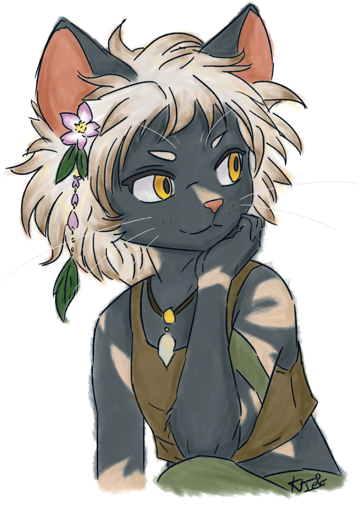
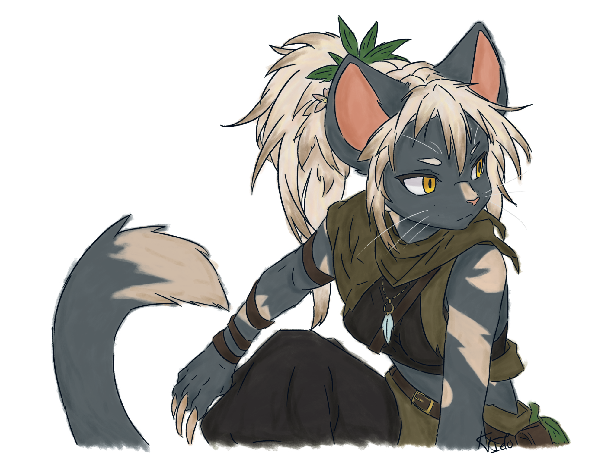

TYPE EAU
Marin
Furry de base et ses deux évolutions.
Voir la famille MarinLES PERSONNAGES
Chaque Furry évolue à sa manière. Choisis une famille pour découvrir ses formes et ses informations.
TYPE EAU
Furry de base et ses deux évolutions.
Voir la famille Marin

TYPE PLANTE
Furry de base et évolution de niveau 1.
Voir la famille Kael
TYPE ROCHE · NIVEAU 2
Ses formes de base et de niveau 1 viendront plus tard.
Voir la famille Caine